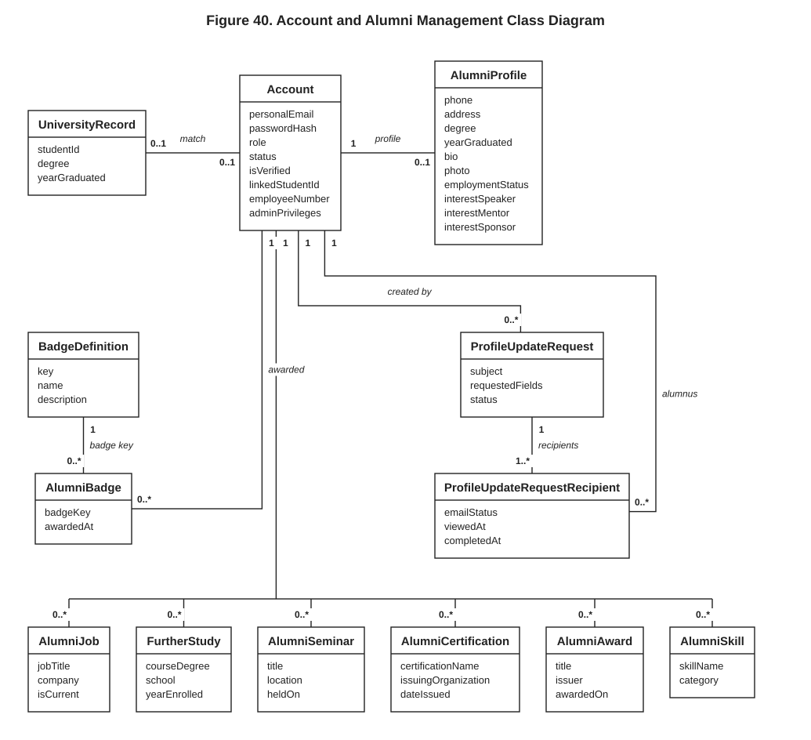
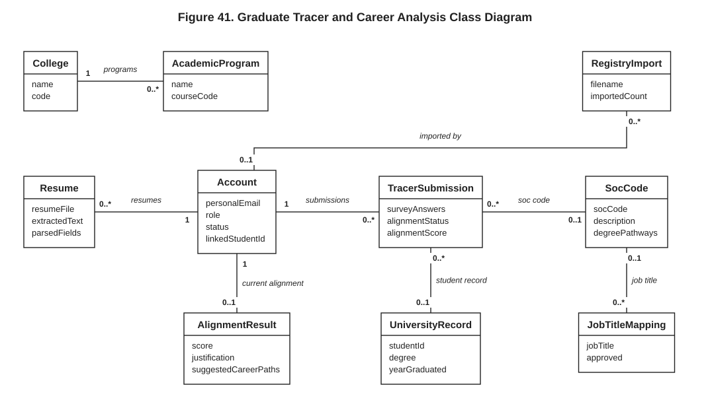
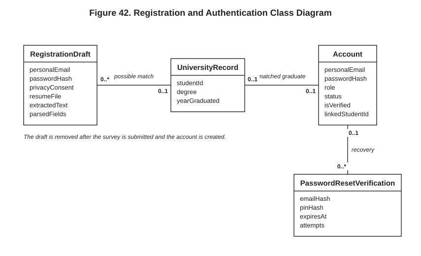
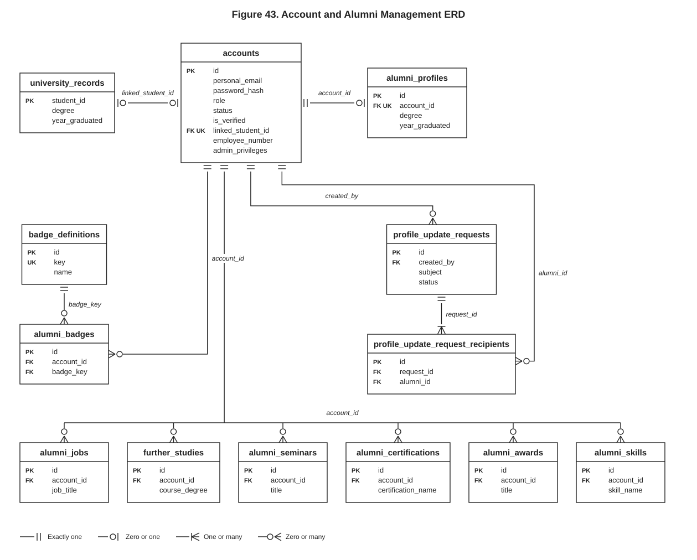
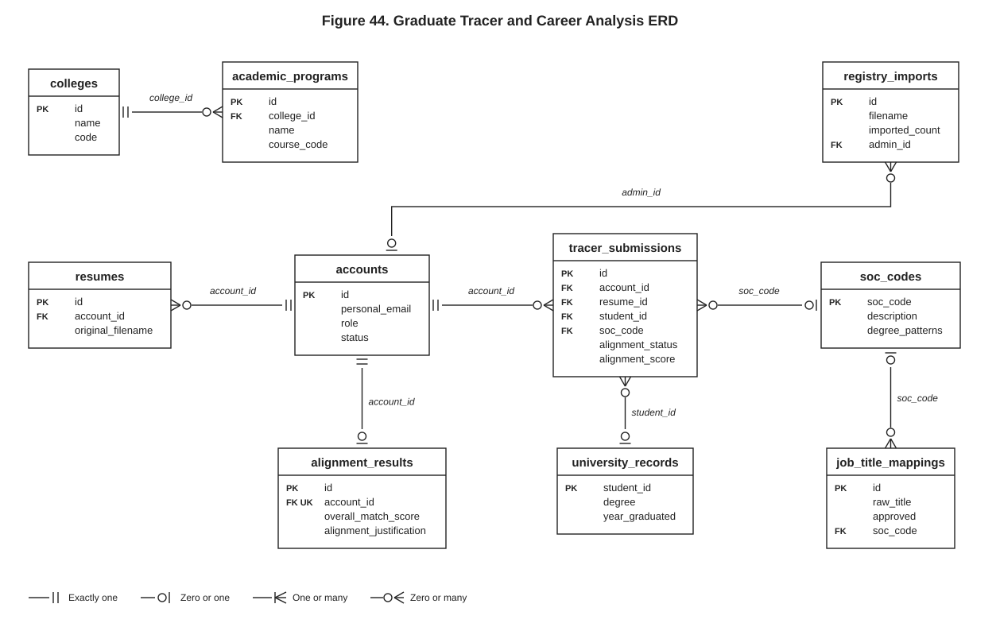
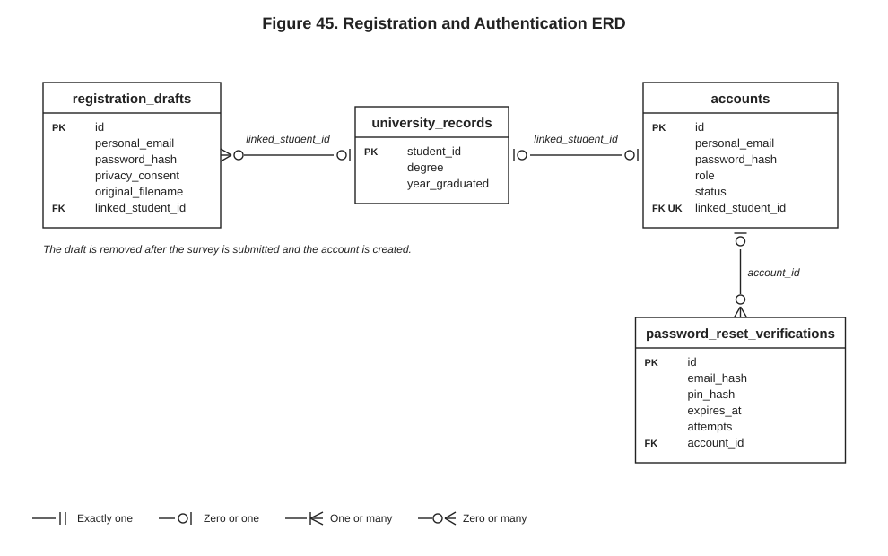
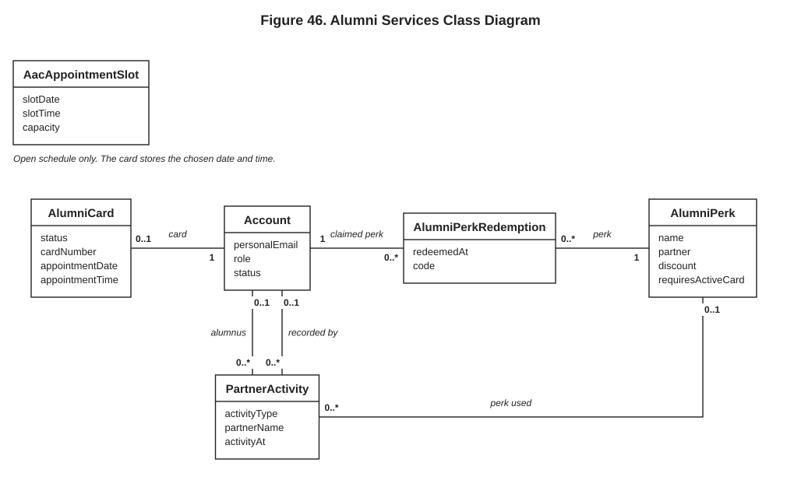
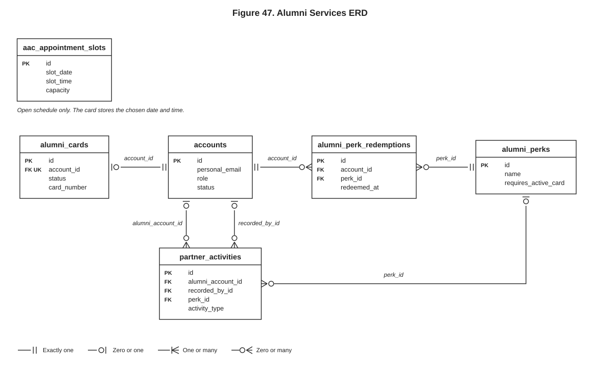

Figure 40. Account and Alumni Management Class Diagram

Figure 41. Graduate Tracer and Career Analysis Class Diagram

Figure 42. Registration and Authentication Class Diagram

Figure 43. Account and Alumni Management ERD

Figure 44. Graduate Tracer and Career Analysis ERD

Figure 45. Registration and Authentication ERD

Figure 46. Alumni Services Class Diagram

Figure 47. Alumni Services ERD
